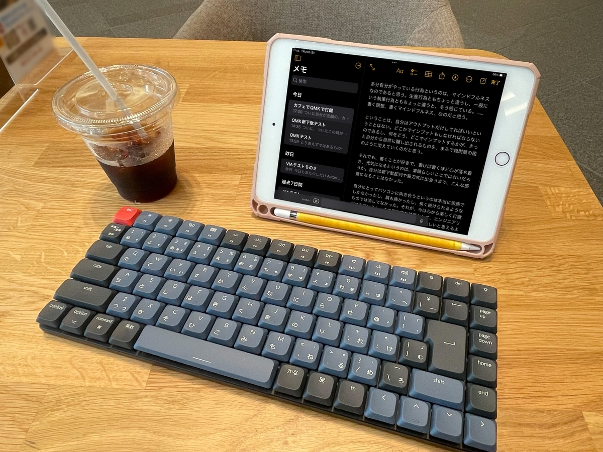
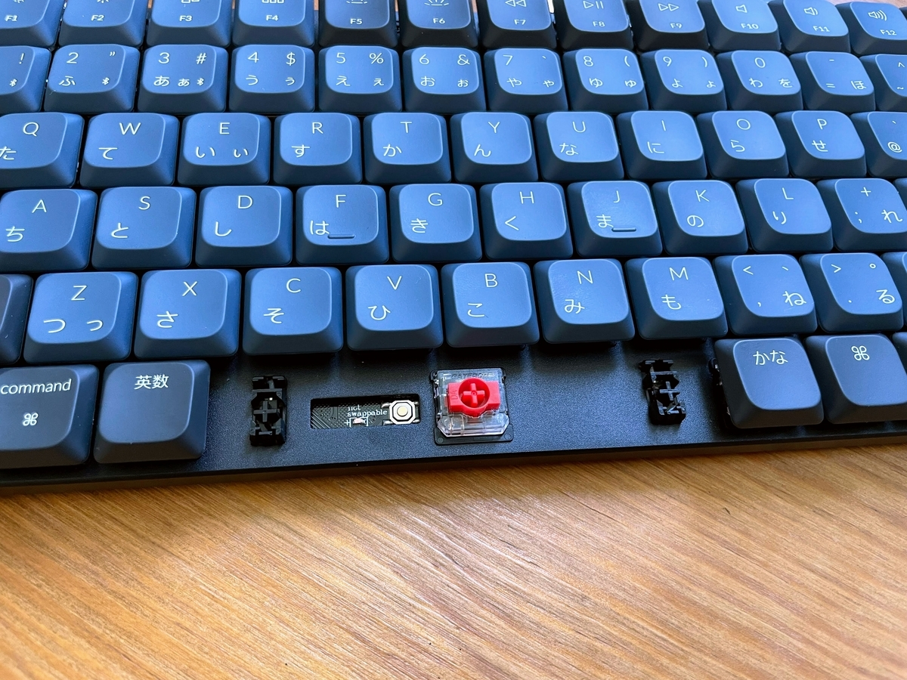

")

ついにこのときが来たか、という、個人的には歴史の1ページを見ているような感じ。*1
先日、Keychron K3 Proという、500gの軽量でありながら、QMK/VIAでの配列のフルカスタムができて、かつBluetooth/USB-Cの無線・有線接続ができるという、素晴らしい市販キーボードが販売された。
（ちなみに自分はAmazonじゃなくてヨドバシの通販で買って、ヨドバシエクストリームで数時間で届いて感激した。）
QMKワイヤレス、QMK Bluetoothで市販されているものはおそらく現時点で他に存在しないので、市場としては初めての製品になるはず。今までもBLE Micro Proという基板自体はあったものの、自作キーボードに留まっていて、完成済み・組み立て済みの市販品はなかった。
そしてこれで新下駄・薙刀式を打てるように、eswaiさんのコードをフォークして書き込み、ついに打てるようになった。
ちなみに手順としては、qmk_firmwareを焼き込める環境を作り (割愛)、funatsufumiya/qmk_firmware_k3pro をGitHubから手元にcloneした上で、make keychron/k3_pro/jis/white:shingeta:flash (追記: 最新版では make keychron/k3_pro/jis/white:naginata_v15_and_shingeta:flash) でK3 Proのファームウェアを更新することで、新下駄・薙刀式が打てるようになる。（Fn + LEDボタン で新下駄・薙刀式の切り替え、Fn + スナップショットボタンで、QWERTY・Astarteの切り替えに割り当てた。）
なおK3 ProのDFUモード (ファームウェア書き込みモード) は、スペースキーの下にあるリセットボタンを押しながら、OFF / Cable の切り替えスイッチを2回入れるとDFUモードに入れる。

実は、新下駄配列をiPadで打つだけであれば、USB2BT PLUSや、かえうち2を使うという方法があったのだけれど、いずれの方法でも薙刀式は技術的な問題から実装ができず、新下駄などが仮に打てたとしても、カフェとかにちょっと仰々しいガジェットやケーブルを持ち込む必要があったので、自分はちょっと嫌だった。
それが今回初めて、QMKワイヤレスという画期的な規格によって、ついにカフェでiPadで優雅に、新配列で文字書きするという夢が実現された。
先日記事に書いたように、薙刀式をもう一度再考している最中だったので、タイミングとしてはこの上なく、に運命の巡り合わせなのかな、と思ってしまうくらい、新配列ユーザにとっては素晴らしい製品がナイスタイミングで発売されて、感激している。
配列というのは、QWERTYやJIS規格のように共通で決まっていることも素晴らしいのだけれど、自由に変えれるのが良いと自分は思っているので、こうしてQMK/VIAを誰でも使えるというのは、素敵なことだと思う。こうした製品がもっと出回って欲しいし、例えばポメラや普通のパソコンなんかにもQMK/VIA的なものが導入されるような未来がくれば、配列エミュレータとかがなくてもよくなるのになと思ったりする。
*1:後述するけれど、普通のキーボードでも、新下駄配列であればUSB2BT PLUSやかえうち2という追加ガジェットを使えば一応実現できる。